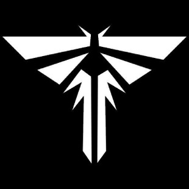

Luciernagas
Las luciérnagas eran un grupo de milicias revolucionarias.
Se rebelaron contra la opresión militar en numerosas zonas de cuarentena
de los Estados Unidos, con la intención de restaurar el control del gobierno
anterior a la pandemia. Las luciérnagas también estaban buscando una vacuna
para la infección cerebral por Cordyceps e hicieron todo lo posible para lograrlo.

FEDRA
Tras el brote de infección cerebral por Cordyceps (CBI) en septiembre de 2013,
la Agencia Federal de Respuesta a Desastres (FEDRA) reemplazó al gobierno de los
Estados Unidos como la principal autoridad del país. Tomaron el control de las fuerzas
armadas y declararon la ley marcial, sacando a los burócratas del poder.
Para contener el hongo, FEDRA hizo que el ejército trasladara a todos los civiles
no infectados a grandes zonas de cuarentena (QZ) dentro de las principales ciudades
como Boston en Massachusetts, Pittsburgh en Pennsylvania y Seattle en Washington.